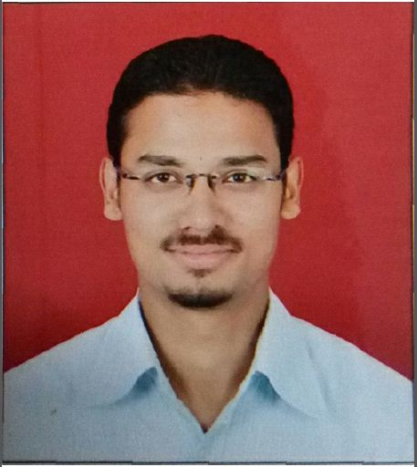

Curriculum Vitae

DUSHYANT SINGH RAJPUT
199/1, Sanchar Nagar Extension,
Kanadiya road, Indore-452016
Madhya Pradesh.
Mobile - +91 8818 911 551
Email: dushysingh@gmail.com
Carrier Objective:
Seek to work in an environment that will challenge me and my skills further while allowing me to contribute to the continued growth
and success of the organization.
Educational Qualification:
- Mechanical Engineering in 2009
- Secondary School from C.B.S.E. in 2005
- High School from C.B.S.E. in 2003
Work Experience
Currently working in VE Commercial Vehicles Limited(A Volvo Group and Eicher Motors joint venture) since July 2012 as an Assistant
Manager in BIW HCV Cabweld department.
- Incharge of the HD Cabweld department (MIS presentation).
- Responsible for the over all development of the BIW product and workforce.
- Leader of short/long term projects for product quality.
- Collecting and Monitoring the improvement data of the department.
- Conducting audits(Process, KCC, Fixture, equipment); seeking and resolving the non-conformities.
- Leading the group meetings for workmen for proper guidance to achieve better productivity and sharing previous day achievements/complaints.
- Implementing new ideas to make foolproof fixtures and jigs.
- Conducting effective training programs for new workmen.
- Committed to achieving the daily/monthly targets as per the ABDP.
- Reducing the line material rejection by implementing PokaYoke for every potential defect of assembly.
- Member of the team working for part communization.
- Member of the team working on fuel efficiency project.
- Participating in Piloting of cabin/vehicles during design alterations.
- Management and planning the workmen for least absenteeism and best utilization of 4M.
Worked in Force Motors Limited from July 2010 to July 2012 as an Engineer in Production Department in Body (Weld) Shop.
- Shift supervisor for the production of L-2000 MAN HCV Cabin.
- Monitering and effectively utilizing the production at various stages of the line.
- Dealing with the various problems of the operators/technicians during work.
- Maintaining a work check sheet for all the major machines of the line.
- Providing trainings to make the workers more vigilant towards their job to avoid breakdowns.
- Encouraging workers for sharing and implementing improved methods of working to improve productivity and achieve targets on time.
- Ensuring safe working and avoiding costly errors for better productivity.
- Arranging a CFT meet each day for discussing daily line issues and executing WHY-WHY analysis to get a satisfying conclusion.
- Working on Kaizen, 5 S, Pokayoke and lean manufacturing.
Worked in SafeFlex International Ltd. as a Production Engineer in Production Department for 1 year.
- Deals with the production of Flexible Intermediate Bulk Containers (FIBC) for export purpose.
- Supervision of 50 workers by providing proper training skills and motivating them towards their work.
- Maintaining complete information of the production plant MIS.
- Planning on the inventory control.
- Acting as a strong intermediate between the Export Marketing and Production department.
- Innovating and implementing effective ways so as to increase the productivity.
- Attending foreign customers and introducing to them the plant assets and technology used.
- Managing proper housekeeping throughout the production room.
Projects:
- Minor Project I: Managerial Economics - A case study of the Fuji Film and Nikon in which market competition forced the former
to innovate new ideas. This was done by implementing managerial skills which helped to save its majority of market share in the
photographic film sector and become the top most manufacturers in its world.
- Minor Project II: Magnetic Refrigeration - A method of refrigeration based on the magneto caloric effect. It is defined as the
response of a solid to an applied magnetic field which is apparent as a change in its temperature.
- Major Project: Reduction of Waste Heat at Utilization for Air Conditioning - Utilizing the waste heat from the industries and
factories to produce air conditioning system on the shop floor. This decreases uneasiness of the workers thereby creating a healthier
atmosphere and increasing the efficiency of the workers.
Personal Profile:
Date of Birth : 02-Nov-1987
Fathers Name : Mr. Yogendra Pal Singh
Marital Status : Married
Languages Known : Hindi, English and French.
Hobbies : Playing guitar, drums, keyboard, listening to music,singing songs and playing outdoor games.